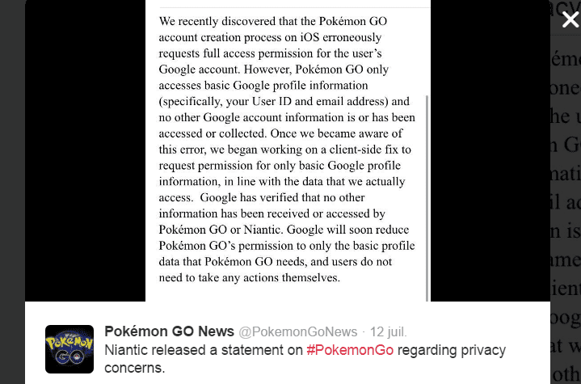
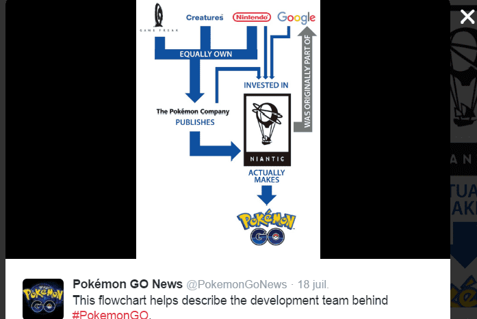
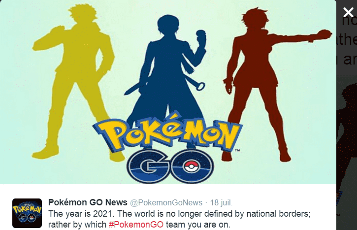

< < < Back
5 Reasons To Boycott Pokemon Go – Return Of Kings
You have probably noticed them by now. Adults dressed like children, eyes rivetted on their smartphones, pacing with awkward and nervous strides around your local roundabout. Here they come, the Pokemon masters!
Pokemon Go has been released for a bit more than a week now and is already the most downloaded application in the history of smartphones. An experience so immersive that it feels like real life, according to the players.
It sounded positive at first. Millions of people sharing the same passion, a game that accomplishes the feat of bringing under direct sunlight the likes of morbidly obese recluse David “Diabetes” Futrelle, loads of fresh air, and so on, but the dangers of the phenomenon start to surface. Some will think I am stating the obvious but we do not need more mindless entertainment. Pokemon GO is just another Trojan Horse and here is why.
1. Gotta watch ’em all!

Oh, if they say it then it must be true
But duuude! This game does not share my info!
They track you. You thought they had enough with Facebook trading your data? Not quite.
The game needs 24/7 global position. To get connected, you need to have a Google account that allowed (or still allows) access to your personal details (name, emails, photos etc.). They know which trainers you hang out with and where. A Holy Grail for a Police State.
Behind that project, Niantic Labs and its CEO John Hanke (a Google “Let Me See Your House” Earth veteran), the Pokemon Company, Apple (Champion of SJWs and Latte Activists) and PC Behemoth Google.

The usual suspects behind this intrusive game
2. Gotta distract ’em all!
Pokemon or my unborn child? Decisions, decisions…
But duuude! This game is played outside and makes me walk!
It is simple. This application sucks your time and your energy for something that does not exist. It is an endless reserve of unproductive entertainment, designed to lock you into a comfortable, mindless loop.
Some will say that I am a killjoy with no Pokefriends and should join the Saudi imams and their anti-Pokemon fatwa. That what is written in books or found in art is equally imaginary.
Books and art bring reflection and knowledge. That game brings nothing of value. As useless and life sucking as those mass player games that have people locked indoors weeks at a time.

Unless you wear a 50 lbs weighted vest, it’s not very effective
Another argument trumpeted by fans is that the game is a good source of exercise as it makes you walk. It does but in a vastly insufficient amounts, cut with many breaks.

How do you do, fellow kids?
3. Gotta attract ’em all!

But duuude! This game is just aimed at being fun!
Your flag and your history do not matter, you are a Pokemon Master. And if you are not with us, you are against us. It would be so great if we could join our great community and unplug your mind from real world issues, imminent threats or budding race wars.
This game sounds like catnip for SJWs. It would allow them to unite all their fellow social rejects and gang up on those who do not agree with their views.

“It is the current year. Nationalism is the real enemy!” Rings a bell?
A product that reaches so many customers cannot exist without an agenda. Many celebrities have already endorsed and showed their enthusiasm for the game. You know that when something receives Hollywood’s stamp of approval, something is wrong.
The shares of Nintendo et all almost doubled their value in a bit more than a week. Loads o’ money, private companies that will soon be able to buy their own Pokestores to bring more sheep customers around, underlying narrative… Winning!

We at Mac Donald’s understand that our trainers must be well fed
4. Gotta castrate ’em all!
But duuude! This game will bring plenty of guys and girls together
Let’s face it. What is more attractive for a woman than a Pokemon trainer squealing “Yay! I caught insert word salad Pokemon name!” in a high-pitched voice while high-fiving his spectacled sidekick.
Pokemon GO is an additional step taken by those in power to turn men with limited time on their hands into unfuckable, digitally-neutered zombie consumers.
“People will meet more and betas will breed.” Indeed, people with socially awkward behaviour will meet others and think that they are normal. They will interact to discuss about pixels and finger swipes. But do the male players think that interacting via this game will palliate the lack of basic flirting skills and magically turn them into womanizers?
They could meet 1000 more girls, it does not matter. Betas are already exposed to legions of girls and do nothing. A man could be in a football stadium full of girls, without minimum game, he will still fail.
Girls were already stuck to the screen of their smartphone. If cold approaches don’t become soon illegal, we will face episodes of “Don’t talk to me. I need to catch this virtual creature.”
Adding more interactions will not replace romantic skills and sexual market knowledge. It is calculated. The final goal is population numbers and reproduction control. People that play are too busy to reproduce.

Pokemon Go has seen less porn and Tinder consumption. Good, but it also shows a decrease of interest for sex
In an accurate allegory, the power wants men to catch monsters instead of attractive girls.
5. Gotta harm ’em all!

The border is safe. Pvt. Matthews caught one during his watch
But duuude, this game is inoffensive!
The game was released a week ago. So far:
People not paying attention and dying are as old as the world. We need candidates for the Darwin Awards.
But girls and children walking alone at any hour of the night to hunt Pokemons and “explore the neighbourhood” is not smart. When will there be a PokeMeeting in The Calais Jungle at night after migrants set a Pokemon Lure there ?
A terrorist downloads the app. A rare pokemon alert pops up. It is broad daylight. 2000 nerds at the same spot, all with backpacks. Guess what?
Un mot pour conclure
This game is for children. A grown man does not play with a child’s toy. It is a waste of time, productivity and human interactions. It is addictive, invasive and a waste of resources and money. It promotes childish behaviour as the norm.
Video says it all:
2.33 Sharp dressed man “All the plebs gather. They just loiter in circles while I make money and live a real life.”
3.03 Low T beta “Been here 4 days. I eat from hot dog trucks. I did not shower.”
My predictions: more Pokemon Go-related deaths and a terrorist attack. I sincerely hope to be wrong.
Read More: How Human Beings Will Choose To Enslave Themselves With Virtual Reality